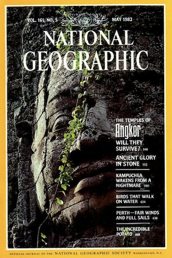
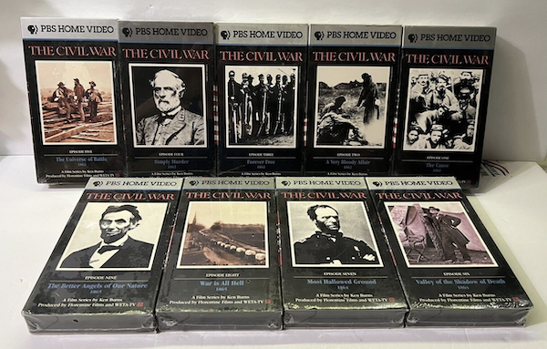

Summary
Creative group project in creating a fictional story told through video. Our
project is based around a female scientist who accidentally travels back in
time to when the height of the Khmer Empire.
Responsibilities
For this project, I contributed significantly to the story concept,
finding appropriate stills for the film, and in-camera work. I
contributed the least to voice over.
Skills
¬ Collaboration
¬ Project Planning
¬ Video Editting
¬ Storytelling
|
Overview
We created a short film about a scientist exploring the ruins of Angkor Wat.
She comes across a trio of radioactive rats, that coincide with an earthquake.
No one else feels an earthquake, and suddenly, she’s vanished. By haphazard,
she’s transported back in time to the height of the Khmer empire.
After exploring the massive temple structure during its height, and discovering
secrets previously lost over time, another mysterious earthquake occurs. Just
as suddenly as she was transported to the past, she's returned to present day.
The three radioactive rats seem like normal rats, as does everything else in
her surroundings- it's as if she was never gone at all.
|
| |
Creation
To create our short film, we predominantly relied on still images with a few
built in-camera effects, music, and live audio voice overs. In camera techniques
included camera shake, panning, and zooming.
The opening began with a shot of foliage. They began to shake, and are pulled
away to reveal a hand-made title screen. The rest of the movie predominantly
relies on cuts between different stills from National Geographic magazines.
We most heavily made use of an issue featuring Angkor Wat from May of 1982.
|

|
| |
To help the still shots have more interest, we utilized techniques similar to Ken
Burns in his well-known Civil War documentary from 1990. These techniques consist
mostly of panning across, or zooming into or out of stills alongside voice over.

|
|